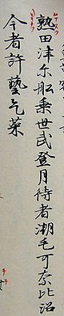

| 地質 | 歷史 | 宗教信仰 | home |
|---|
在日本古代詩歌集《萬葉集》，有許多與富士山有關的文學作品，其中山部赤人的短歌最為著名： “ 田兒之浦從 打出而見者 眞白衣 不盡能高嶺尓 雪波零家留 ” （上爲萬葉假名原文，現代日文寫作：田子の浦ゆ うちいでてみれば 真白にぞ ふじの高嶺に 雪は降りける） 能夠考證富士山噴發年代的最早的文字記錄，是《續日本紀》，書中記錄了781年（天應元年）從富士山噴出的火山灰。在平安時代初期創作的《竹取物語》也有相關記載可以了解到當時的富士山是一座活火山。 在江戶時代，1707年12月16日的寶永山大噴發在江戶城中落下了大量的火山灰。關於這次噴發，留存有大量的文字和圖畫記錄。 此後，也有許多關於火山口冒煙和震動的記錄，但可以推測基本都為短期且小規模的火山活動。
